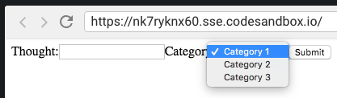
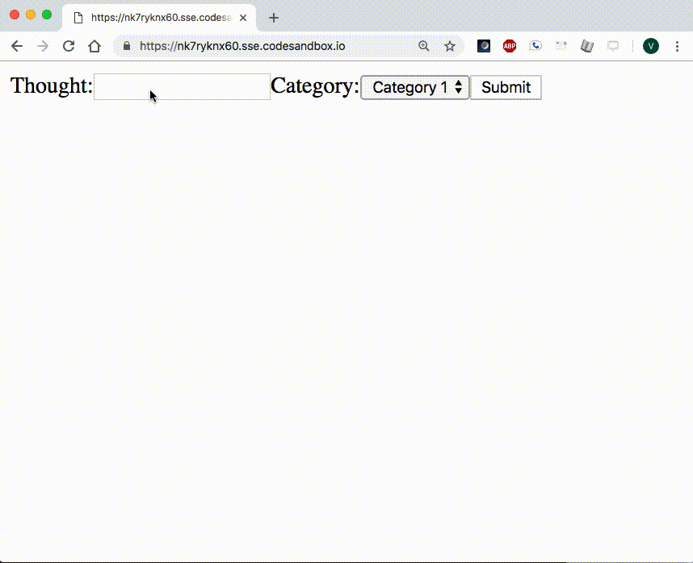

Project Journal: January 7, 2019
Today was a solid (althought not as much as yesterday) day of progress. I came across some core concept questions regarding
testing with chai and rendering with pug.
Dysfunctional functional tests
The next task on my board was to write and pass functional tests for the '/' route's
GET request.
In the previous small projects I had created, I was used to checking all my requests with some returned JSON. This is the first time where I was writing a test for a request that resulted in a rendered page with no other response.
I haven't quite figured out what exactly I should test when sending a GET request to '/', but
this is what I chose to stick with for today:
test("GET response contains correct page headers", function(done) {
chai
.request("http://localhost:8080")
.get("/")
.end(function(err, res) {
assert.equal(res.status, 200, "Response status should be 200");
assert.include(res.text, "Topic");
assert.include(res.text, "Problem Statement");
assert.include(res.text, "Known Variables");
assert.include(res.text, "Unknown Variable");
assert.include(res.text, "Known Variables");
assert.include(res.text, "Relevant Formulas");
assert.include(res.text, "Answer");
done();
});
});
I tested for an ok response, and then checked if res.text, which
contained a string of HTML to be rendered in the browser, had each of the headers that were expected.
Yuck.
Or maybe this is how these tests should go? I can't imagine that to be the case. I don't think testing for static text values says much about the functionality of my code, but then again, it does test the functionality that my server serves data that then results in a page rendered with some expected text.
Clearly, I have to learn more about testing a scenario such as this.
Project #2 takes off
I began working on my second two-week project today: ThoughtBoard. I started by creating a Trello board for my project, with some basic tasks:
- Create basic "Hello World" server.js
- Add sandbox.config.json to repo
- Import GitHub repo into Codesandbox
Deeper questions
I am exerting a conscious effort to be mindful of my vision and scope for these projects and slapping on the two-week deadline helps. I don't want to spend time on edge cases while the core functionality remains unexplored. So I started Doing the following tasks first:
- Review README.md contents
- Determine the most important element of this app
As a reminder, the core functionality for this project is:
Allow user to write down and then iteratively categorize and group their thoughts
I'm still struggling to wrap my head around this web app's core functionality, but I came up with three discrete and separate features to explain it:
- Write down your thoughts > Most important
- Categorize them > Next most important
- Group them > Next most important
- Categorize and group thoughts iteratively > Next most important
Take 1: Static page
Following the steps above, I completed the following task:
- Serve a static
index.htmlwhere user canPOST`thought` text and a `category` text

Okay that's awesome---I could type text, select a category, and submit both. This essentially took care of Write down your thoughts as well as Categorize them.
Take 2: put it in a pug
Tackling the next feature, Group them, would require some storage and iteration. Since I'm keeping things pretty rough draft for today,
I chose to store POST body fields in an object in server.js
// server.js
let thoughts = {};
app.route('/')
.post(function(req, res) {
// There's probably a JS equivalent of python's `setDefault`
if (!thoughts[req.body["category"]]) {
thoughts[req.body["category"]] = [req.body["thought"]];
} else {
thoughts[req.body["category"]].push(req.body["thought"]);
};
res.redirect("/");
});
`category` keys would have a corresponding array full of `thoughts`, such as the following:
// the value of `thoughts` after a few form submissions
{
'Category 1': [ 'Thought 1', 'Thought 2' ],
'Category 2': [ 'Thought 1', 'Thought 2'],
'Category 3': [ 'Thought 1' ]
}
The index.pug file contained the following logic:
each val, index in thoughts
ul
li=index
each thought in val
ul
li=thought
This resulted in the following functionality:

Not bad! I achieved a minimal version of the three features since the user could write down their thoughts, categorize them, and group them by category.
I want to jump in and start figuring out how to allow the user to do this iteratively, but before that can happen, I want to write unit and functionality
tests for what I have so far.